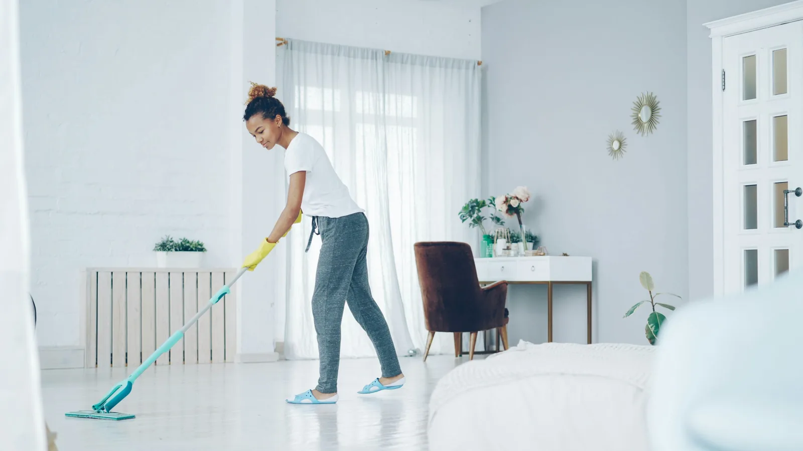

تنظيف المنزل في وادي الدواسر يصبح أسهل عندما يتحول من قائمة مفتوحة إلى نطاق واضح. دليل لتقسيم تنظيف الفيلا أو المنزل الواسع في وادي الدواسر إلى مناطق وأولويات قابلة للإنجاز دون فوضى أو حشو.
في المنزل الواسع بوادي الدواسر، قسّم الخطة إلى مناطق: المدخل والمجلس، غرف النوم، الخدمات، ثم المخازن والمساحات الخارجية إذا كانت ضمن الاتفاق. حدّد نقطة توقف يومية، ولا تنتقل إلى منطقة جديدة قبل جمع المخلفات وإعادة الأدوات إلى مكانها.
ابدأ بتوصيف المكان
قبل طلب أي خدمة، اكتب وصفًا قصيرًا للمكان: شقة أو فيلا، عدد الغرف والحمامات، نوع الأرضيات، وجود مجالس أو مخازن، وما إذا كان المنزل مأهولًا. هذه المعلومات لا تعني أن كل بند سيكون مشمولًا تلقائيًا؛ لكنها تساعد على بناء قائمة واقعية وتمنع تقديرًا غامضًا للوقت. في وادي الدواسر، الأفضل أن تذكر ما تريد إنجازه أولًا وما يمكن تأجيله، ثم تطلب تأكيد نطاق العمل كتابةً.
قسّم التنظيف إلى مراحل
الترتيب من الأعلى إلى الأسفل يقلل إعادة الاتساخ: ابدأ بالأسطح المرتفعة، ثم الأثاث، ثم الأبواب والمقابض، وأخيرًا الأرضيات. اعمل غرفة غرفة أو منطقة منطقة بدل التنقل العشوائي. ضع الأدوات في سلة واحدة، واستخدم قطعة مناسبة لكل نوع سطح. هذه الطريقة مفيدة خصوصًا عندما يكون الوقت محدودًا أو عندما يحتاج المنزل في وادي الدواسر إلى تنظيف عميق على أكثر من زيارة.
المطبخ يحتاج قرارًا واضحًا
أزل بقايا الطعام أولًا، ثم نظف أسطح التحضير وواجهات الخزائن والمقابض والحوض والموقد بمنتج متوافق مع الخامة. لا ترش السوائل على الأجهزة أو المفاتيح مباشرة، ولا تخلط منتجات مختلفة. تنظيف داخل الخزائن والأجهزة أو إزالة الدهون القديمة بنطاق خاص؛ لذلك اذكره صراحةً عند الحجز، ولا تفترض أنه جزء من كل عرض في وادي الدواسر.
الحمام والأسطح الرطبة
في خطة وادي الدواسر، اجعل منطقة الحمام مرحلة منفصلة: امسح الأسطح من الأعلى، استخدم أدوات مستقلة، ثم اشطف وجفف قبل الانتقال إلى الأرضيات. هذا الترتيب يقلل انتقال الأوساخ ويجعل ملاحظة أي بند ناقص أسهل.
الأرضيات والكنب والسجاد
السيراميك والرخام والخشب والفينيل والأقمشة لا تتعامل بالطريقة نفسها. اقرأ ملصق العناية، واختبر المنتج على منطقة غير ظاهرة، وتجنب الماء الزائد والمواد الكاشطة. بالنسبة للكنب والسجاد، حدّد نوع النسيج واطلب طريقة التجفيف. في وادي الدواسر، قد يكون من الأفضل إدراج هذه البنود في قائمة مستقلة إذا كان هدف الزيارة تنظيفًا دوريًا سريعًا.

تجهيز المنزل قبل الموعد
قبل بدء العمل في وادي الدواسر، جهّز المكان بطريقة تناسب محور المقال: أبعد المقتنيات، حدّد الأسطح الحساسة، ووضح المناطق التي لا تريد تحريك محتوياتها. التحضير المسبق يوفر وقت الزيارة ويحمي الأشياء التي لا تدخل في نطاق التنظيف.
كيف تراجع جودة العمل؟
راجع القائمة المتفق عليها عند انتهاء الزيارة: المطبخ، الحمامات، الأرضيات، الأسطح، المقابض والمناطق ذات الأولوية. لا تخلط بين ملاحظة تحتاج إعادة معالجة وبين تلف قديم أو عيب في السطح؛ صوّر الحالة قبل العمل عند الحاجة. التواصل الواضح مع مقدم الخدمة في وادي الدواسر يساعد على معالجة الملاحظات دون إضافة مهام لم تُتفق عليها.
الوقت والتكلفة دون تخمين
تتأثر مدة العمل بمساحة العقار، عدد الغرف، درجة الاتساخ، الأدوات المطلوبة، وعدد المهام الإضافية. اطلب عرضًا يذكر ما يشمله وما لا يشمله والمدة التقريبية وأي رسوم محتملة. قارن عروضًا متشابهة في نطاق العمل، لا سعرًا مختصرًا مقابل خدمة مختلفة. لا تستخدم أرقامًا عامة كضمان؛ فكل منزل في وادي الدواسر يحتاج تقييمًا منفصلًا.
روتين يحافظ على النتيجة
للمحافظة على نتيجة التنظيف في وادي الدواسر، اربط العناية اليومية بنوع المنزل: مهمة قصيرة بعد الاستخدام، ومهمة أسبوعية لمنطقة واحدة، ومهمة شهرية للمناطق المرتفعة أو الأقل استعمالًا. لا تجمع كل البنود في يوم واحد إذا كان ذلك سيؤخر الأساسيات.
النوافذ والمداخل
ابدأ بإطارات النوافذ والحواف ثم انتقل إلى الزجاج، ونظف الأبواب والمقابض ومفاتيح الإضاءة بقطعة رطبة قليلًا دون رش السائل على الكهرباء. لا تستخدم سلّمًا غير ثابت للوصول إلى مكان مرتفع، واتفق مسبقًا على ما إذا كانت النوافذ الخارجية ضمن الخدمة. إبقاء المدخل مرتبًا في وادي الدواسر يجعل الصيانة اليومية أسرع.
المناطق التي تُنسى عادةً
عند إعداد قائمة وادي الدواسر، أضف المناطق التي لا تظهر في الصور الأولى: أسفل الأثاث الخفيف، الحواف، فتحات التهوية، خلف الأبواب، ومكان سلة النفايات. اطلب التعامل مع الأثاث الثقيل أو الأجهزة بوضوح قبل بدء العمل.
قبل طلب تنظيف عميق
التنظيف العميق ليس مجرد استخدام كمية أكبر من المنظف. حدّد البقع القديمة، اذكر نوع الطلاء أو الخامة، وأخبر مقدم الخدمة إن كانت هناك أعمال صيانة حديثة أو رطوبة. اطلب اختبارًا على مساحة غير ظاهرة، واسأل عن زمن الجفاف والتهوية، خصوصًا عند تجهيز منزل في وادي الدواسر للسكن أو الاستقبال.
قائمة فحص قابلة للطباعة
اكتب أسماء الغرف في عمود، والمهام في عمود آخر، ثم ضع علامة عند الإتمام وملاحظة عند وجود بند خارج النطاق. احتفظ بنسخة على الهاتف وراجعها مع الشخص المسؤول عن المنزل. هذه الخطوة البسيطة تمنع نسيان غرفة أو تكرار مهمة، وتحوّل التواصل مع فريق التنظيف في وادي الدواسر إلى نقاط واضحة قابلة للمراجعة.

متى تحتاج مختصًا؟
هناك فرق بين التنظيف والإصلاح في وادي الدواسر. اطلب مختصًا إذا ظهرت رطوبة مستمرة أو عفن واسع أو خطر كهربائي أو ارتفاع غير آمن، واذكر المشكلة في طلب الخدمة بدل محاولة معالجتها بمادة تنظيف أقوى.
تنسيق الزيارة مع الأسرة
حدّد وقتًا يستطيع فيه شخص مسؤول فتح المكان ومراجعة البنود، وأبلغ أفراد الأسرة بالغرف التي ستتأثر بالحركة أو الرطوبة. أبعد الأجهزة والمقتنيات التي قد تعيق الوصول، واتفق على وسيلة تواصل واحدة للملاحظات. هذا التنظيم يقلل المقاطعات ويحافظ على خصوصية المنزل في وادي الدواسر، خصوصًا عندما تكون الزيارة طويلة أو موزعة على مراحل.
الاختيار بين زيارة واحدة وجدول دوري
الزيارة الواحدة مناسبة للانتقال أو الاستعداد لمناسبة، بينما يساعد الجدول الدوري على منع تراكم الغبار والدهون. لا تجعل تكرار الزيارة آليًا؛ راقب الاستخدام الفعلي وعدّل البنود. يمكنك البدء بقائمة أساسية في وادي الدواسر ثم إضافة النوافذ أو المفروشات في موعد مستقل، بدل ضغط كل المهام في زيارة واحدة غير واقعية.
ملاحظات تحفظها بعد التنظيف
احتفظ باسم المنتج المناسب لكل سطح، ومكان الأدوات، والبنود التي تحتاج متابعة. اكتب تاريخ آخر تنظيف عميق للمطبخ والحمام والنوافذ، وسجّل أي بقعة أو تلف ظهر قبل العمل. هذه الملاحظات تحول التجربة التالية إلى موعد أكثر دقة، وتساعدك على شرح احتياج المنزل في وادي الدواسر دون إعادة اكتشاف التفاصيل من البداية.
أسئلة سريعة قبل تأكيد الموعد
- ما المهام المشمولة بالتحديد، وما البنود الإضافية؟
- ما نوع المواد والأدوات المستخدمة على الأسطح الحساسة؟
- ما المدة التقريبية وطريقة مراجعة الملاحظات بعد الانتهاء؟
- هل تؤكد الشركة نطاق التغطية والموعد كتابةً؟
زاوية عملية: تقسيم الفيلا أو المنزل واسع المساحة
هذا الجزء يخص مقال وادي الدواسر تحديدًا: دليل لتقسيم تنظيف الفيلا أو المنزل الواسع في وادي الدواسر إلى مناطق وأولويات قابلة للإنجاز دون فوضى أو حشو. لا تبدأ التنفيذ قبل الاتفاق على ترتيب البنود، وما يحتاج مادة أو أداة خاصة، وكيف ستتم مراجعة النتيجة في نهاية الزيارة.
الخلاصة
أفضل نتيجة لا تبدأ بالمنظف، بل بوصف المنزل وتحديد الأولويات ومراجعة النطاق. إذا كنت تبحث عن تنظيف منازل بوادي الدواسر في وادي الدواسر، تواصل مع الخيال للخدمات المنزلية لشرح احتياجك، وتأكد من التفاصيل قبل تأكيد الموعد. هذه الإرشادات عامة، وقد تختلف الطريقة المناسبة حسب الخامة وحالة المكان.
ملاحظة عملية في وادي الدواسر
قبل الحجز، افصل بين العمل العاجل والعمل التحسيني، وحدد ما يجب إنجازه في الزيارة الأولى حتى تكون النتيجة قابلة للمراجعة.
ولطلب شركة تنظيف بصورة أوضح، اذكر مساحة المكان ودرجة الاستعجال وما جُرّب سابقًا، ثم راجع بنود الخدمة قبل اعتماد الموعد.
اتصل الآن للاستفسار عن الخدمة
تأكد من توفر الخدمة ونطاقها في مدينتك قبل تحديد الموعد.